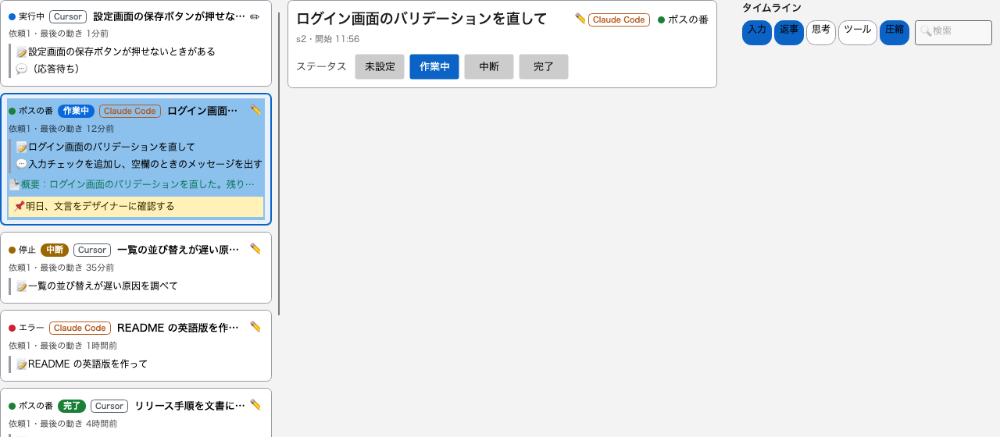
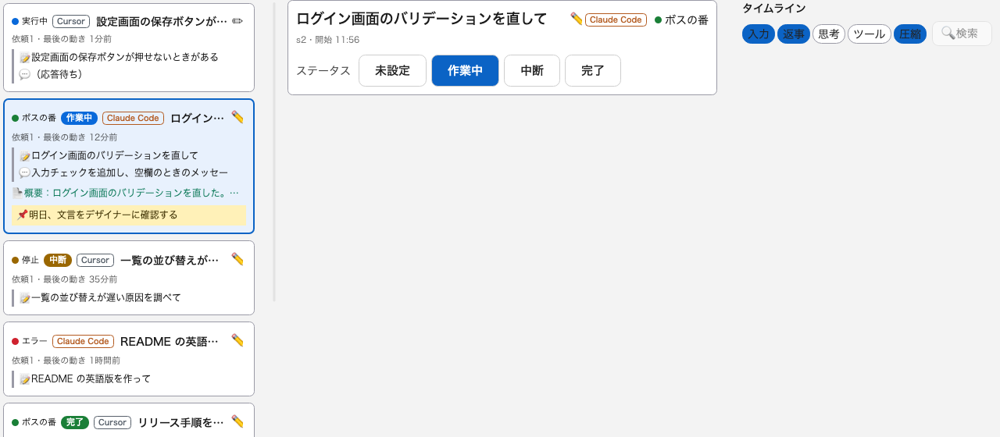
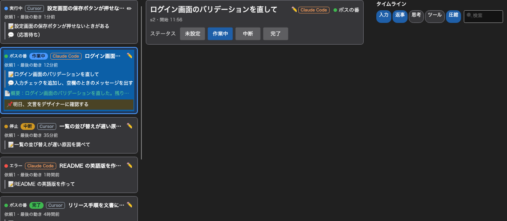
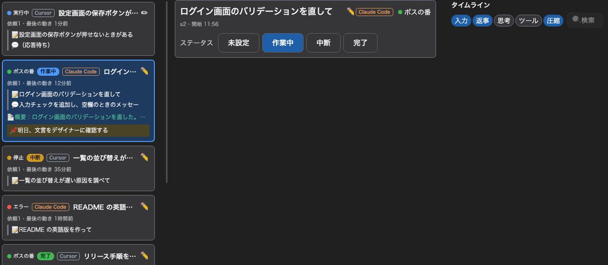
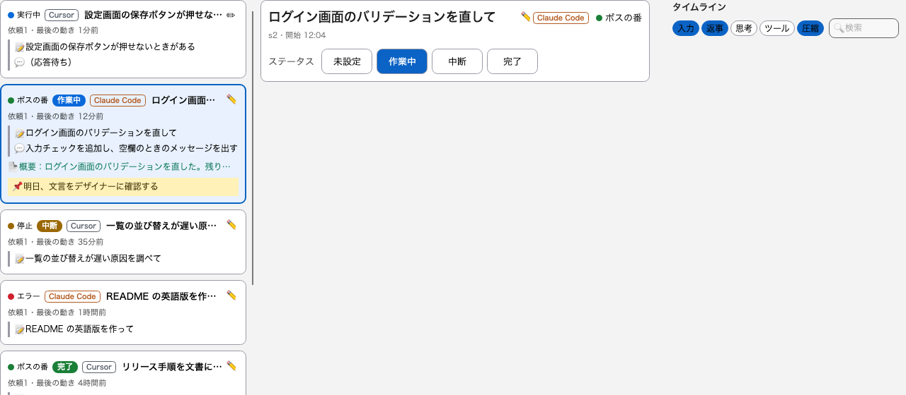
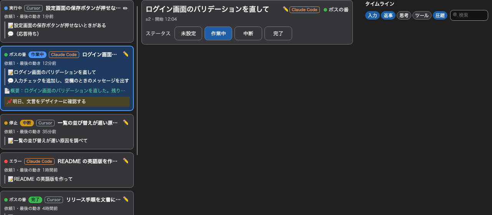

テーマの見比べ：FluentTheme と SukiUI
Phase 30-2。同じ画面（カード一覧・詳細のヘッダー・右ペインの見出し）を、テーマだけ替えて撮った。mac（Hiragino Sans）・ダミーのデータ・幅 1280px。 左が FluentTheme（Avalonia 標準）、右が SukiUI 7.0.1。配置・項目はどちらも同じ（変わるのは部品の見た目だけ）。




見た目の違い
| FluentTheme | SukiUI | |
|---|---|---|
| ボタン・検索ボックス | 角が小さく、WPF 版（WPF-UI）に近い | 角が丸く、一回り大きい。検索ボックスの地が薄く、無効のように見える |
| ステータスのボタン | 灰色の塗り。選択中は青 | 白（ダークは暗い）の地に枠。選択中は青 |
| カード一覧 | どちらも同じ（カードの枠・選択の見た目は、こちらでテンプレートを置き換えて統一した） | |
| チップ | どちらも同じ（こちらで作った見た目） | |
SukiUI で確かめたこと（要件 12.5 の ①〜④）
| 項目 | 結果 | 説明 |
|---|---|---|
① ふつうの Window で崩れない | 手直しで解決 | そのままだと、ダークで窓の地が明るいまま・文字が暗いままになり、読めない（SukiUI は専用の SukiWindow で地と文字を決める）。要件 12.12 のとおり OS 標準のタイトルバーを使うので専用ウィンドウは使えない。窓の地と文字の色を自前の色（WindowBackgroundBrush・WindowTextBrush）で決めて解決した。 |
| ② 3 ペインに収まる | 収まる | 右ペインの種別チップ 5 つと検索ボックスは、340px で 1 行に収まる（両テーマとも）。SukiUI の一覧項目は余白が大きく ✔ が出るので、カードのテンプレートを置き換えた（置き換えた後は両テーマで同じ密度）。 |
| ③ 日本語が OS のフォントで出る | 手直しで解決 | SukiUI は部品ごとに独自の欧文フォントを指定する（英字だけ丸い字形になる）。TextBlock・Button・TextBox・CheckBox・MenuItem のフォントを自前で上書きして、日本語は Hiragino Sans で出た。 |
| ④ 「OS に合わせる」で、実行中の OS のライト/ダークの変更に追従する | 未確認 | 画面を出さない環境では OS の設定を変えられない。実機で、アプリを開いたまま OS の外観を切り替えて確かめる必要がある（FluentTheme は ThemeVariant.Default で追従する）。 |
そのほかの判断材料
- 依存：SukiUI は
Avalonia.Controls.DataGrid・Avalonia.Controls.ColorPicker・Avalonia.Themes.Simple・System.Linq.Dynamic.Coreも連れてくる（Miharikun では使わない）。FluentTheme は Avalonia 本体の一部。 - 上書きの量：SukiUI は上の ①③ と一覧の項目のほか、ダイアログ（
SukiUIの重ねて出す形は使わない）にも手が要る見込み。FluentTheme は今のところ上書きがほぼ要らない。 - Windows の見え方：この撮影は mac。Windows の見え方は、同じテストを Windows で
MIHARIKUN_SHOTS=<フォルダ> dotnet test tests/Miharikun.UiTestsと回すと同じ 4 枚が撮れる。
決定（2026-10-07）
FluentTheme を使い、見た目は SukiUI に寄せる。角の丸み・ボタン（白地に細い枠）・チップの余白を手直しした（下は採用した見た目）。SukiUI のパッケージは外した。


（決める前の）おすすめ
FluentTheme。WPF 版に近く、手直しがほぼ要らず、依存が増えない。SukiUI の丸みのある見た目が好みなら、上の手直し（①③と一覧項目。済み）に加えて、④の実機確認と、ダイアログまわりの確認が残る。決めるのは利用者。